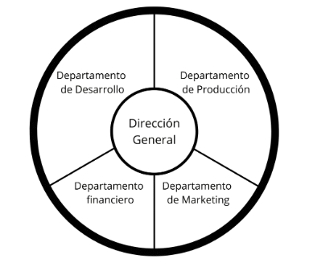

Gitengo es una aplicación de control de versiones que te permite controlar tu código desde el dispositivo que quieras. Además de disfrutar de todas la herramientas necesarias para controlar todos los cambios de tu proyecto; podrás establecer cualquier dispositivo como nodo central, ya sea nuevo o viejo, dedicado o reutilizado.
Nuestro equipo está formado por programadores experimentados y apasianados por la tecnología y sus posibilidades, determinados a expandir el uso y el entendimiento del control de versiones.
En Gitengo queremos promover la creación de programas robustos y accesibles para todos los que lo necesiten, y en apostar por la reutilización de equipos informáticos.
A través de nuestra apliación nuestros clientes podrán tener un mayor control y mejor acceso a sus proyectos, así como dar una nueva vida a un dispositivo que ya no utilizan cómo nodo central para almacenar su código.
La programación es cada día más importante en nuestras vidas, y cuántas más herramientas existan para ayudar a las personas entenderla y manejarla, más preparados para el futuro estaremos. Al mismo tiempo vemos que este crecimiento supone un derroche de equipos electrónicos a una escala masiva, y necesitamos saber reutilizarlos y sacar su mayor provecho.
Técnico Superior de Desarrollo de Aplicaciones Multiplataforma.
Experiencia en Java, Kotlin, C++, C# y JavaScript.
3 meses de prácticas en una empresa alemana.
Pulsa este link para ver una presentación sobre nuestra aplicación.

En Gitengo seguimos un modelo de organización informal y un estilo de liderazgo democrático. Porque buscamos que se fomente la productividad de nuestros trabajadores, puedan de compartir sus ideas y que se valore su opinión.